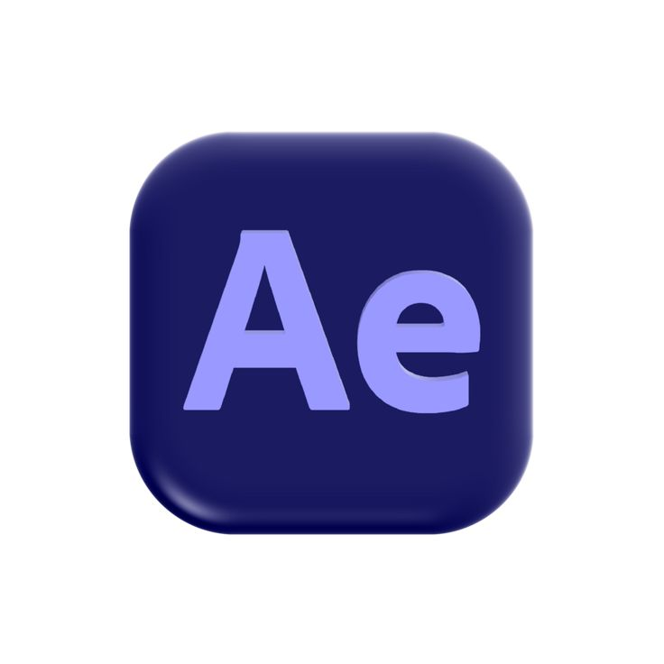

GREAVEN
KEIYOSHI
PRASOJO.
Dikenal sebagai Joprass — berfokus pada 3D Character Animation, body mechanics, motion graphics, dan produksi multimedia kreatif.

Tentang & Keahlian

Greaven Keiyoshi P.
3D Animator (Animation Division)
Divisi: 3D Animation & Multimedia
Kompetisi: FLS2N & Klungkung Film Festival
Organisasi: Ketua Sekbid 9 OSIS SMKN 4 Madiun (2025/2026)
Karya Resmi: 3D Logo Bumper Forum BKK Jawa Timur
Halo! Saya Greaven Keiyoshi Prasojo, siswa jurusan Animasi di SMKN 4 Madiun yang berfokus di divisi 3D Animate. Saya mengerjakan pergerakan karakter 3D (body mechanics, acting, & lip-sync), motion graphics, serta editing video untuk kompetisi film dan proyek freelance.
Software Proficiency
15 Selected Projects
Mari Berkolaborasi
Tertarik bekerja sama untuk proyek 3D Animation, Motion Graphics, atau Video Editing? Hubungi saya atau unduh CV lengkap di bawah ini.